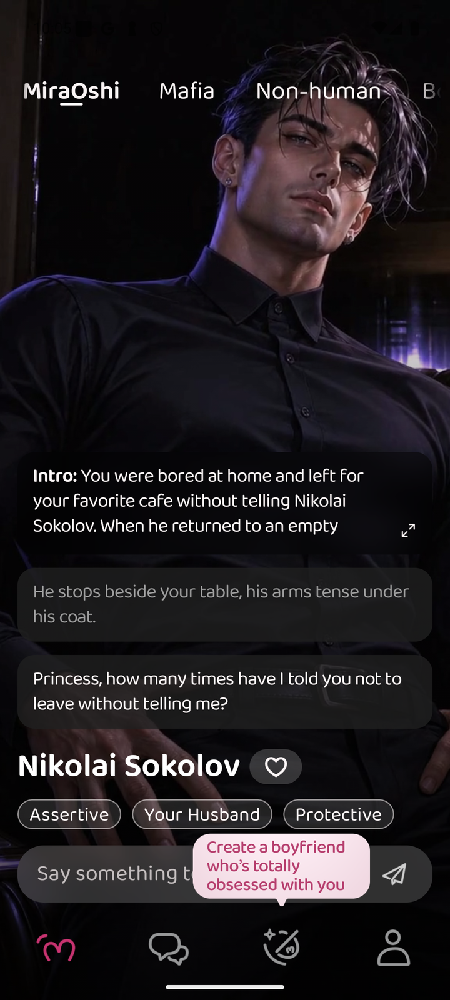
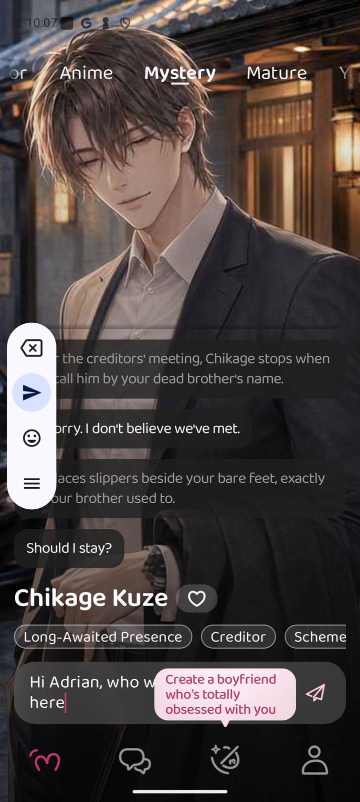
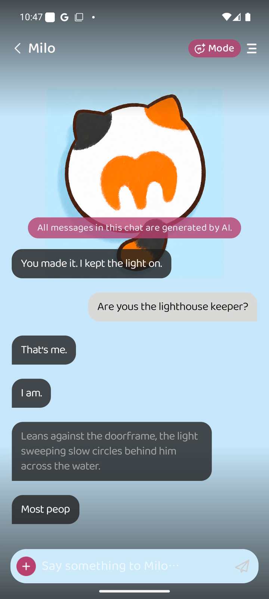
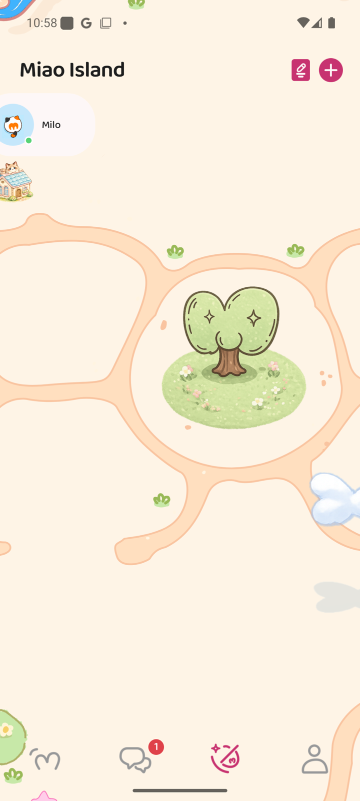
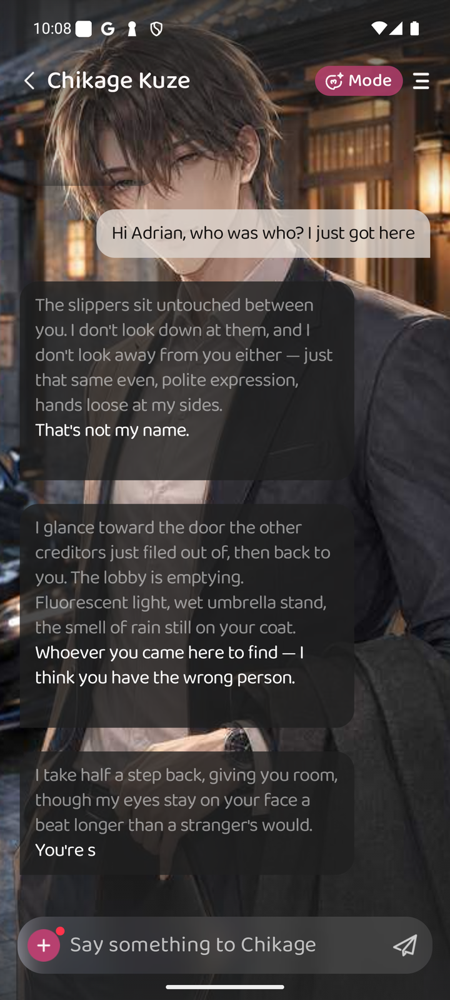
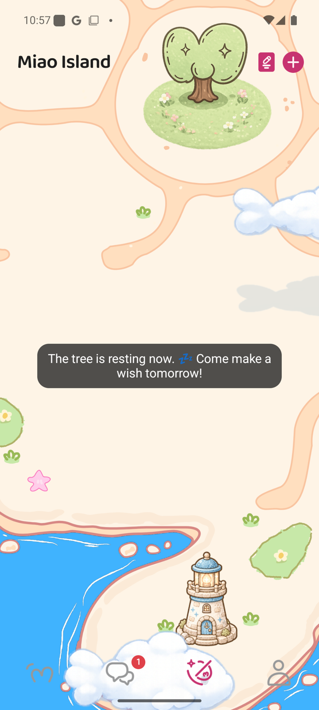
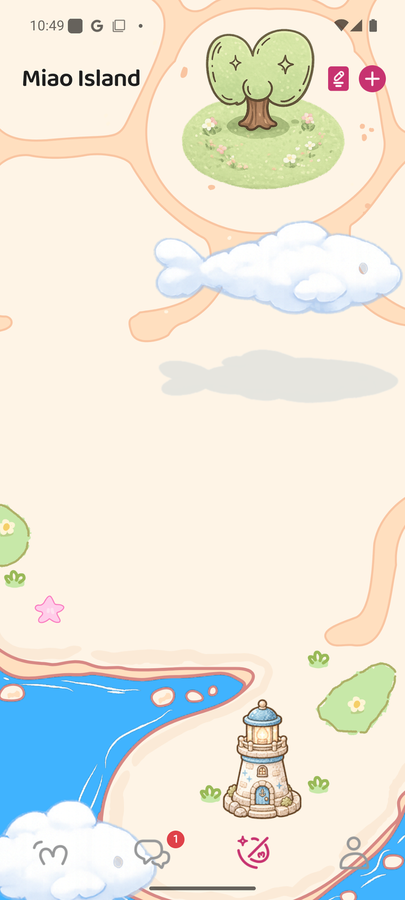
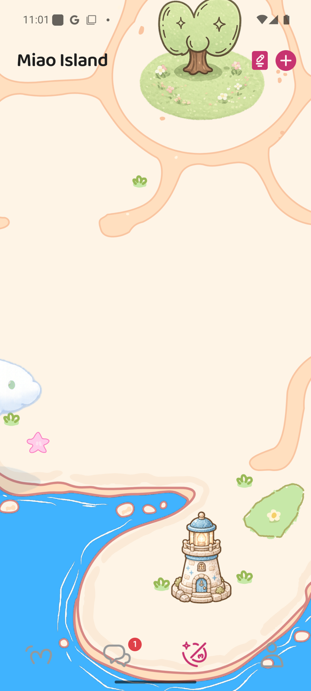

2. Mira 这两页实际是什么
| 页面 | Mira 怎么做 | 图 |
|---|---|---|
| 首页 | 全屏竖滑角色卡。卡上是场景简介、角色台词、标签，底部就是输入框。在卡上发出第一句就进聊天，中间没有详情页。 | 10、12、15 |
| 小岛 | 底部 Tab 打开一张可拖动的插画地图。空地块是虚线加号，每个私有角色占一格，旁边一座小屋。点名牌直接进普通聊天。树和灯塔是装饰，外加每天一次的小福利。 | 60、71、81 |
| 聊天气泡 | 一次回复拆成多个气泡。动作是灰字，台词是白字，各自一颗。 | 16、17 |
岛上每个居民只有格位、小屋样式和角色信息，没有等级、经验、好感度。岛的价值是把角色摆出来，不是让岛长大。
首页原样




小岛原样



气泡原样


3. 首页怎么改
现在
1.2.0 的首页是角色卡加标签和互动数，底部有 @{creator}。点卡片直接开聊，点头像进详情。For You、Popular、Trending、Latest 四个 Tab 的排序不动。
改成
- 卡片全屏竖滑。封面铺满，一张卡一屏。对照截图 10、12。
- 开场白压在卡上。用第 5 节的气泡，只放一两句，点开看全文。对照截图 11。
- 底部就是输入框。在卡上发出第一句，等于用默认 Role Card 建会话并送出，不先跳进聊天页。对照截图 15。
- 卡上留下这些：角色名、标签、@{creator}（只展示，不能从这里进主页）、互动数。浏览数继续不展示。
- 点封面开聊，不带输入。点头像进角色详情，沿用 1.2.0。
- 四个 Tab 和排序不变。只改卡片长什么样，不改分发给谁。1.3.3 的会话列表插卡不受影响。
抄
全屏卡、开场白压在画面上、底部输入框、竖滑换人。
不抄
- Mira 的卡上没有创作者和互动数。Feva 留着，创作者分发还在。
- Mira 用性别加题材筛选（截图 14）。Feva 继续用 1.1.0 的标签池。
4. 小岛怎么改
放在 Me · Created
1.1.0 写明：点 Create 直接进入单页创作表单，不设独立的 Create 首页。所以小岛不放进 Create，Create 表单保持原样。
- Me · Created 顶部加一个切换：列表 | 小岛。默认仍是现在的九宫格和状态角标。
- 小岛里能看到本人的全部角色：Public、Private、审核中、未通过。状态用角标区分。
格子里放什么
- 一个角色占一格。格子用角色封面，没有封面就用占位图。对照截图 60 的空位、截图 71 的小屋。
- 点格子进入这个角色的聊天。对照截图 70。
- 长按弹出现在已有的菜单：编辑、置顶、公开或私密、删除。
- 空格子是「创建新角色」，点进去仍是 Create 表单。
抄
一格一个自己的角色，点一下就进聊天。对照截图 60、71、70。
不抄
许愿树、灯塔、随机掉落、插画地图和拖动。Feva 没有 Stars，充值货架是主线。本期用网格，不做一张能拖的地图。名字建议用「我的角色」或 My Cast，不叫 Miao Island。




不新增字段。小岛读的就是 Me · Created 那一份角色数据。审核状态和是否公开仍是两个字段，不合成一个。
5. 聊天气泡怎么改
现在
1.2.0 已经去掉头像、把气泡加宽：AI 在左，用户在右。旁白、对白、加粗的格式写明和 1.1.0 一样，都待在同一颗气泡里。重新生成和生图的版本切换挂在最新一颗 AI 气泡上。
改成
- 一次回复拆成多颗气泡。按段落拆，一段一颗。对照截图 17。
- 旁白和对白分开。旁白灰色斜体，对白正常字重。两颗仍属于同一条消息。
- 计费和存储不变。一次模型回复仍是一条消息、扣一次费、存一条记录。拆开只在展示层。
- 重新生成、生图切换、失败重试、生成中都挂在这一轮的最后一颗气泡上，不跟着每一颗重复。
- 用户自己发的不拆，仍是右边一颗。
要先改 1.2.0，再开发
- 「旁白格式与 1.1.0 一致」改成「旁白和对白各自一颗气泡」。
- 「超长内容不撑破气泡」补一条：单颗气泡超过约定行数就续到下一颗。
- 同一会话多次生图保持现状：图是独立的一颗，不参与文字拆分。
6. 待决策
| 建议 | 另一条路 | |
|---|---|---|
| 小岛放哪 | Me · Created 里切换，见第 4 节 | 独立 Tab。要改底部结构，和 1.1.0 冲突 |
| 叫什么 | 「我的角色」或 My Cast | 沿用 Miao Island。Feva 里这个词没有上下文 |
| 气泡按什么拆 | 按段落 | 按句子。一轮会变成十几颗，读起来碎 |
| 卡上开场白多长 | 两行，点开看全文。Mira 卡上大约两三行，见截图 10、11 | 卡上放全文。全屏卡会被字盖住 |
| 何时改 1.2.0 | 第 5 节那三处先改 PRD，再开发 | 先做展示、后补文档。和已发布的 PRD 对不上 |
7. 怎么看有没有用
- 首页：在卡片上发出第一句的比例，对比现在「点卡、进聊天、再输入」。沿用现有首页埋点，不新加事件。
- 小岛：Me · Created 里切到小岛的人有多少，以及从格子点进聊天的比例。
- 气泡：一轮回复平均拆成几颗、用户往下滚多深、重新生成的比例。
8. 来源
| 内容 | 位置 |
|---|---|
| 同文 Markdown | 05_借鉴方案/2026-11-20_抄Mira首页与小岛_Feva改版方案.md |
| Mira 竞品报告 | 01_产品调研/2026-11-19_Mira_竞品调研.html 第 3、4、6.1、6.2 节 |
| 本页截图 | 03_图表截图/2026-11-19_Android_v1.3.6/：10、11、12、14、15、16、17、60、70、71、72、79、80、81、82 |
| Feva 1.1.0 | Create 单页表单、Me · Created 的审核态和可见性、Role Card |
| Feva 1.2.0 | 首页点卡直接开聊；气泡改造，旁白格式写明不变 |
| Feva 1.3.3 | 会话列表插卡。本方案不改它 |
点击任意截图可放大查看。